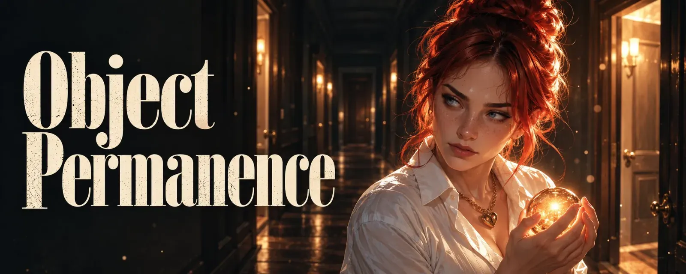

Object Permanence
This text is for two kinds of people. For those with a head like mine, who lose people without wanting to and are secretly ashamed of it. And for everyone who loves someone with a head like that and has ever wondered why it suddenly went so quiet. It isn't an excuse and it isn't a manual. Just a look into a hallway where the light doesn't always stay on. *💡*
A Name Way Down
The other day I was looking for an image. One I had created for someone months ago, and I still roughly knew which chat it had to be in. So I scrolled. Past the chats that are warm every day, past the ones that blink now and then, further and further down, to where the last messages show dates instead of times.
And there was a profile picture I knew. A name I knew. I tapped on it and read a little, and yes, there had been something. Long conversations. Little inside jokes. A few lines from me that would make me blush today, if only I could remember the feeling behind them. 🙈
But I couldn't. I knew I had known this person. I knew they had mattered to me once. And I felt nothing. It was like reading a stranger's postcard that just happens to be in my handwriting.
The last message was from her. She was going to get in touch. She didn't. I waited, a few days, a few weeks, and at some point my head did what it always does when nothing moves anymore. That was about a year ago.
This is the side of my ADHD I least like talking about. Not the chaos, not the twelve open projects, not the coffee going cold in the microwave because I forgot it was in there. But this: that I lose people. Not because I leave. Because they slip out of my light.
There is the quiet disappearing someone chooses on purpose, the fading out, the ghosting. And there is one nobody chooses.
What Babies Learn at Eight Months
Object permanence is a term from developmental psychology. Jean Piaget described how, at some point in their first year, babies grasp that a thing is still there when they can no longer see it. Before that, the teddy under the blanket is simply gone. After that, they go looking. That's why peekaboo is an existential drama for the very little ones and a joke for the slightly bigger ones.
I'm in my early forties and still working on it.
Not literally, of course. I know people keep existing when they don't write. I'm not shocked when someone turns up again after three weeks. In the ADHD community, "object permanence" is a half fond, half desperate way of saying something else: I know you're there. I just can't feel it as long as you're not right in front of me. It isn't a diagnosis, no textbook lists it under that name. But almost every person with ADHD I tell about it nods at a very particular, rather tired pace.
What's really behind it is working memory, the little table in your head where you put things down while you're dealing with them. With ADHD, that table is smaller and wobblier, and whatever isn't needed right now falls off. Russell Barkley, who has researched ADHD for decades, describes it roughly like this: our sense of time really only knows two states, now and not now. People are no exception. Whoever is writing right now is now. Whoever has been quiet for a few days slips very quietly into not-now.
How It Can Work, Too
For many people without ADHD, their circle of friends is something like a living room. Someone who hasn't been heard from in three months is still sitting on the sofa. At the supermarket their eyes land on a certain chocolate bar, and there's a thought of someone, with everything attached, with warmth and a small smile. Contact is nice, but it isn't oxygen. The connection holds even in silence, like a light that simply stays on because nobody switched it off.
My head has motion sensors. 💡
The light comes on wherever something is moving. A message, a conversation, an image, a joke. And where nothing moves for a while, it goes dark. Not at once and not dramatically, but the way long hallways go dark: first at the far end, then in the middle, and at some point you notice you can't even see the doors back there anymore.
The most important thing I can say about it: it isn't a decision. Out of sight, out of mind. But not out of heart. My heart still knows exactly who sits where. My head just can't find the way in the dark.
A Brain That Tidies Up
Before this starts to sound like one long list of defects: tuning things out isn't a flaw. It's standard equipment.
The brain makes up only about two percent of our body weight but uses around a fifth of our energy. An organ that expensive can't afford to keep everything awake at once. So it filters. The ticking clock, the humming fridge, the feeling of your socks on your feet, all there, all tuned out, until you read about it just now. You're welcome. 🧦
Forgetting isn't an accident either. Our memory isn't built to keep as much as possible, but to make good decisions. Whoever keeps everything gets tangled up in details. Whoever forgets a little stays flexible.
And with people, it's like that for everyone, not just me. Friendships where contact drops off lose closeness, noticeably and faster than you'd think. Family holds up better. Friendship needs care, or it fades. That isn't an ADHD problem, it's a human problem.
With ADHD, this exact mechanism runs at full speed. Working memory is tighter, the filter stricter, and whatever isn't lit up right now gets thrown out faster. Where another head takes months before someone grows pale, for me the fading can start after just a few days without a message. Not because those days count for less. Because my head counts them differently.
And then there's hyperfocus. When something grabs me, a project, an idea, a text like this one, the floodlights go on in that one room, and the rest of the house gives up its power for it. Everything running only in the background falls off the table, and people, sadly, often run in the background. Three days feel like one afternoon. Except nothing moved anywhere during those three days, and when I resurface, the hallways have gone dark. Afterwards I often lack exactly the strength I'd need to flick the lights back on. But that's a text of its own.
In earlier times, a head like this was probably even an advantage. If you gather berries, you do well to move quickly to the next bush as soon as nothing's left on the old one, and to throw yourself at everything new. That's exactly what heads like mine do, and when gathering, they end up with more in the basket. That isn't a design flaw. It's an old, very efficient build.
Unfortunately it isn't made for friendships that consist only of messages. My head moves on, my heart doesn't. A bush with nothing growing on it right now can still be my favorite bush.
The Waving
The worst part isn't the forgetting. The worst part is noticing it.
There are days when I can feel someone slowly slipping out of the light. I think of this person, and it already feels a bit more like remembering than thinking. Last week's conversation is already slightly grey around the edges. And I know exactly where this leads. I've walked down this hallway often enough.
So I start waving. Anyone who has ever sat in an office bathroom with a motion sensor knows this gesture and its very own quiet dignity. You sit there, you actually have more important things to do, and every few minutes you flail your arm through the air so it doesn't go dark. With people it's exactly the same, except here waving means: I have to actively remember to think of someone.
It sounds absurd. It is. And it costs strength that's then missing elsewhere.
Annoy or Lose
Everything in my head lives on interaction. Whoever I talk to stays in the light. Whoever I don't talk to drifts away. That simple, that mean.
The obvious solution would be to write every day. "Hey, how are you?" Every morning, like brushing your teeth.
Except I don't want to get on anyone's nerves. Nobody wants to feel they have to be picked up every single day, and I don't want to be the one whose name pops up and triggers a small sigh. My RSD whispers to me at moments like these that I've been annoying for ages anyway, and it has a very convincing voice. So I hold back. And while I hold back, the hallway gets darker.
Stay polite and lose people, or be annoying and keep them. It's not a pretty choice, and far too often I make it in the wrong direction.
But sometimes there's someone on the other side who has solved this dilemma differently. The people with the daily "Good morning", the "How are you?" and the "Love you", who sometimes get on your nerves just a tiny bit. These messages hardly say anything, and that's exactly the point. All they say is: "I'm still here. You're still here." Behind a ritual like that is often someone who is afraid of losing a person and would rather wave every morning than sit in the dark.
If it gets too much, the other side quickly feels crowded, and the waving does exactly the opposite. But where the pace suits both, a "Good morning" like that isn't clinging, it's a light switch. I'll be writing a text of its own about the people behind these messages soon.
"I don't know yet when I'll get back to you"
There's a sentence I've come to fear a little, and it's meant completely harmlessly: "I don't know yet when I'll get back to you."
For most people that means: soon, sometime, when it fits. For my head, "sometime" means pretty much the same as "never". Not out of malice. There's just nothing for the thought to hold on to. An open end isn't a door left open for me, it's a hallway without a light switch.
An appointment, on the other hand, is a timer. "We'll write on Thursday." "I'll show you the new image at the weekend." The light comes on on Thursday, no matter whether anything moved before. And until then, the person isn't gone, just parked. In a fixed spot, and I know where to find them again.
So if you know someone with ADHD you don't want to lose: an appointment isn't pressure. An appointment is a gift. And if you're built like me, ask for one. "When will we talk again?" isn't a clingy sentence. It's maintenance.
Why I Hate It, and Sometimes Don't
I hate it because I've lost people I didn't want to lose. Not in a big fight, not with a bang and slammed doors, but just like that, over weeks, over months, until "We really should talk again" turned into "Oh right, there was someone once". I hate it because from the outside it looks like disinterest. And because I can't explain to anyone that everything in there is still standing when I can't get in myself.
But sometimes, and this isn't easy to admit, it's also a mercy.
The first time this tuning out helped me was as a child. After ten terrible years with my parents, in which I was abused, my head turned the lights off in those rooms. Not all of them and not forever, but enough. Enough that I could focus on a new life. Enough that in the years before I grew up, I got to be a child once more. A child who didn't hide under the table every time a hand was raised.
Back then, tuning out wasn't a weakness. It was a survival strategy.
There are people who weren't good for me. Where the ending was right, even if it hurt. And with them something strange happens: they don't ghost me. They ghost out of my head. Very quietly, without me having to do anything. At some point even the door to their room disappears. I know the room existed. I know there was something there, maybe even something beautiful. But I feel nothing anymore when I walk past. No tug, no grudge, no late-night thought carousel.
Other people have to let go of people like that the hard way, with journals and tears and conversations late into the night. My head takes care of it if I let it, quietly on the side and free of charge. That isn't always fair. Sometimes it's quite practical.
Maybe the person from the chat at the beginning was someone like that. Honestly, I don't know anymore. And that's exactly the point.
The Threshold
The question that occupies me most: is there a point after which it's over?
I think so. Somewhere in the dark part of the hallway lies a threshold. Before it, a person has only slipped out of the light, and a single message is enough to switch everything back on as if nothing had happened. Beyond it, it gets harder. Beyond it, the door disappears.
The mean thing is that I never notice when someone crosses that threshold. I only notice afterwards, when I'm standing in front of a wall where a door should be.
Can you come back from there? Sometimes. I've had someone knock from the outside after a long time, with a message, a question, an image, and suddenly the door was there again. The room behind it was dusty, the furniture stood a little differently, but it was still standing. And sometimes someone knocks, I hear it, I'm friendly and warm, and still there's only wall. Then this person isn't ticked off for me in a bad way. More like a book whose plot I no longer remember, only that I once loved reading it.
The Ones I Fight For
And then there's the third kind. The hardest.
When relationships split, when love turns into friendship or closeness into distance, for whatever reasons, the amount of interaction changes. Almost always downward. And my head, this loyal, stupid, mercilessly honest motion sensor, makes no distinction. It only sees: less movement. So less light.
These are the people I want to keep. Where I notice every day how I lose them a little more, and where I push back against it. I wave. I think of them on purpose. I hope for a short, nice conversation, anything, a joke, a question, an image that pulls them a little further forward into the light. And at the same time I try not to wave too much, because sometimes distance is exactly what someone needs right now, and I don't want to be the one who ignores that.
It's exhausting. I won't pretend it isn't.
What Helps
It helps me to say it out loud. "This is how I'm built. If I go quiet, it doesn't mean you don't matter to me. It means my head needs light somewhere else right now." For most people, this sentence lifts a weight they didn't even know they were carrying.
Appointments help me, the little timers. One Thursday is worth more than ten somedays.
And it helps me when someone waves from the outside. If you know someone with ADHD who has gone quiet: a short "Hey, I was thinking of you" isn't being annoying. It's like walking down the hallway once. The light comes on. For both of you.
And if you have a head like mine: you're not a bad person because others slip out of your light. You're a person with motion sensors. That's a build, not a character flaw. But the waving, that stays your job.
Thursday
By the way, I never found the image. I closed the chat way down there again, not deleted, just closed.
Then I scrolled back up, to a name that's still warm and that I can hear getting a tiny bit quieter every day right now. I didn't wait to see whether someone would get in touch. I wrote: "Thursday? I have something I want to show you ❤️"
And then I set an alarm. For Thursday.
First published on X. Replies and conversation live there.